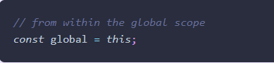
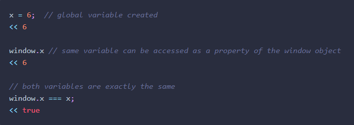
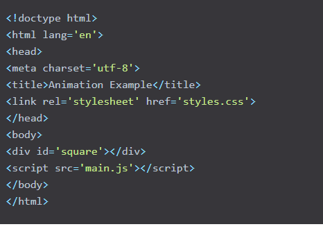
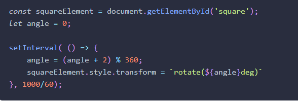

Week02
The Window Object
Questions:
-
What is the difference between confirm and alert method?
-
Is Windows part of DOM?
-
Can I create my own API?
In a browser environment the global object is the window object, which represents the browser window that
contains a web page.
In this chapter we will cover these topics:
- The Browser Object Model
- Finding out browser information
- Browser history
- Controlling windows
- Cookies
- Timing functions
The Browser Object Model
The Browser Object Model (or BOM for short) is a collection of properties and methods that contain information
about the browser and computer screen. For example, we can find out which browser is being used to view a page
(though, this method is unreliable). We can also find out the dimensions of the screen it is viewed on, and
which pages have been visited before the current page. It can also be used for the rather dubious practice of
creating pop-up windows, if you’re into annoying your users.
The BOM Only Makes Sense in a Browser
Environment
Example

Going Global
These are variables that are created without using the const, let or var keywords. Global variables can be
accessed in all parts of the program.
Global variables are actual properties of a global object. In a browser
environment, the global object is the window object. This means that any global variable created is actually a
property of the window object, as can be seen in the example below:

Browser Information
The window object has a number of properties and methods that provide information about the user’s browser.
Which Browser?The window object has a navigator property that returns a reference to the Navigator
object. The Navigator object contains information about the browser being used. Its userAgent property will
return information about the browser and operating system being used.
The window.alert() method will pause the execution of the program and display a message in a dialog box. The
message is provided as an argument to the method, and undefined is always returned.
The window.confirm() method will stop the execution of the program and display a confirmation dialog that
shows the message provided as an argument, and giving the options of OK or Cancel
The window.prompt() method will stop the execution of the program. It displays a dialog that shows a message
provided as an argument, as well as an input field that allows the user to enter text. This text is then
returned as a string when the user clicks OK. If the user clicks Cancel, null is returned
The window.location property is an object that contains information about the URL of the current page. It
contains a number of properties that provide information about different fragments of the URL.
The Browser History
The window.history property can be used to access information about any previously visited pages in the current
browser session.
A new window can be opened using the window.open() method. This takes the URL of the page
to be opened as its first parameter, the window title as its second parameter, and a list of attributes as the
third parameter. This can also be assigned to a variable, so the window can then be referenced later in the code
Controlling Windows
new window can be opened using the window.open() method. This takes the URL of the page to be opened as its
first parameter, the window title as its second parameter, and a list of attributes as the third parameter. This
can also be assigned to a variable, so the window can then be referenced later in the code
Cookies
Cookies are small files that are saved locally on a user’s computer. They were invented by Netscape as a way of
getting round HTTP being a stateless protocol. This means that a browser does not remember anything from one
request to another. So every time a user visits a page, nothing about any previous visits is remembered. Cookies
can be used to sidestep this problem by storing information that can then be retrieved between requests.
Animation
The setTimeOut() and setInterval() methods can be used to animate elements on a web page. As an example, let’s
create a web page that shows a colored square, and make it rotate. Create a folder called animation that
contains files called index.html, styles.css and main.js. Place the following code inside index.html:

This places a div on the page with an ID of square.
Next, add the following styles.css:

This will set the position,
dimensions and color of the div. Now for the animation ― add the following code to main.js:

Open animation.html in your browser and you should see a rotating
square, although it will probably be quite slow and not very smooth. This was the only way to achieve animation
using JavaScript until the window.requestAnimationFrame() method was developed.
Reminders
The window object is the global object in a browser.
Global variables are actually properties of the window object in a browser environment.
alert, confirm(), and prompt() are all methods of the window object, and open dialogs that halt the execution of
the program.
The window.navigator object gives information about the user’s browser and operating system, although it can be
unreliable.
The window.location object provides information about the URL of the current page.
The window.history object keeps information about the pages that have been visited in the session.
You can open, close, resize, and move windows (although, this doesn’t mean you should!).
The window.screen object provides information about the user’s screen.
document.write() is an archaic method of writing text to the document and should be avoided.
Cookies can be used to store small pieces of information between requests using the document.cookie property.
The window.setTimeout() method can be used to invoke a function after a set amount of time. It can be canceled
using the clearTimeout() method.
The window.setInterval() method can be used to repeatedly invoke a function. It can be stopped using the
clearInterval() method.
The window.requestAnimationFrame() method can be used to produce smooth and optimized animation by utilizing the
browser's built-in graphics capabilities. It can be canceled using the cancelAnimationFrame() method.
The Content Template element
Think of a template as a content fragment that is being stored for subsequent use in the document. While the
parser does process the contents of the template element while loading the page, it does so only to ensure
that those contents are valid; the element's contents are not rendered, however.
Attributes
This element only includes the global attributes.
However, the HTMLTemplateElement has a content property, which is a read-only DocumentFragment containing the
DOM subtree which the template represents. Note that directly using the value of the content could lead to
unexpected behavior.